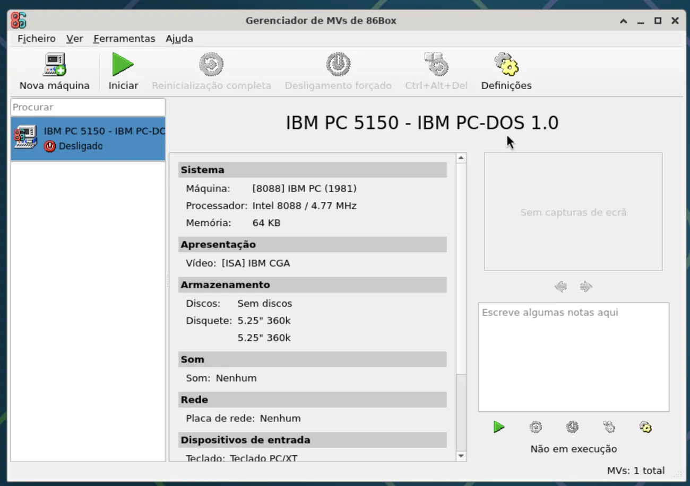
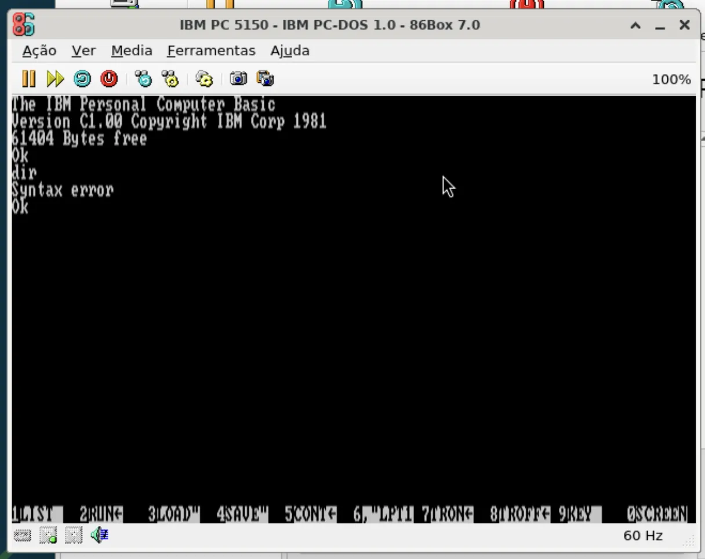
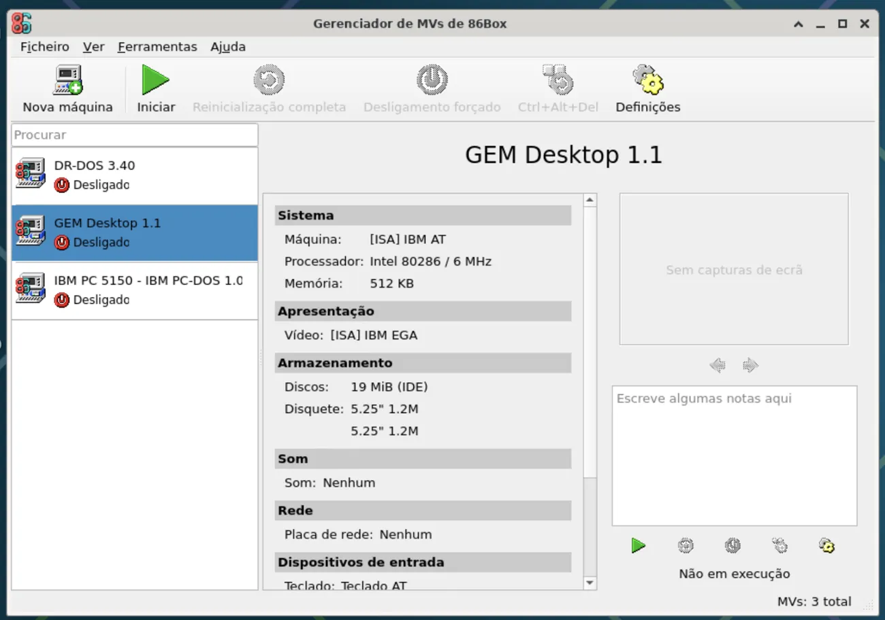
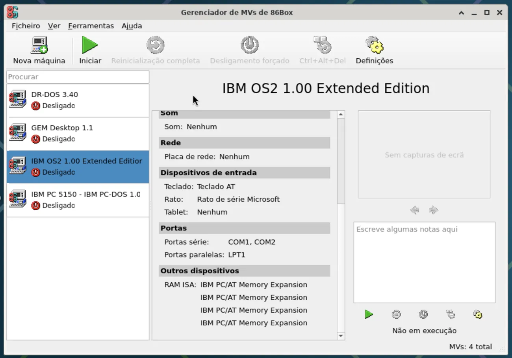
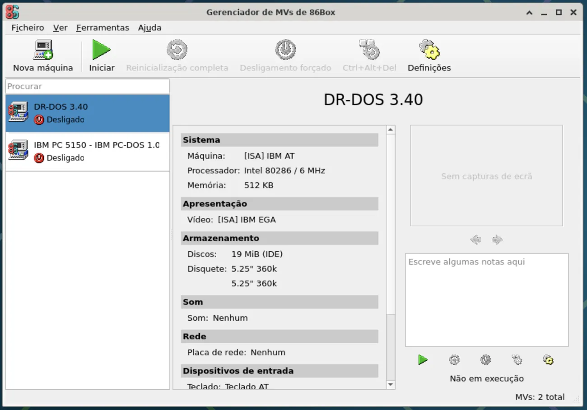

Um computador antigo dentro de outro computador
O 86Box não é apenas uma máquina virtual genérica: emula computadores e componentes históricos, permitindo selecionar plataformas IBM PC/XT/AT, placas gráficas CGA e EGA, controladores, unidades de disquete e velocidades de processador adequadas à época. No laboratório, o Proxmox aloja a VM Debian 2002; o Debian executa o 86Box; e, dentro do emulador, são criadas máquinas independentes.
Esta experiência complementa o Retro-SIMH, dedicado a Altair DOS, CP/M e 86-DOS, e os testes de DOS no Proxmox. Aqui o objetivo é sobretudo reproduzir a plataforma de hardware de cada período.
IBM PC 5150 — PC-DOS 1.0 / BASIC
Foi criada a configuração de um IBM PC 5150 (1981), com Intel 8088 a 4,77 MHz, 64 KB de RAM, vídeo CGA, duas unidades de disquete de 5¼ polegadas com 360 KB e sem disco rígido nem placa de rede.
O teste de execução abriu o IBM Personal Computer BASIC C1.00, com copyright de 1981. O comando DIR introduzido neste ambiente provocou Syntax error: é o comportamento esperado, pois não se estava perante o interpretador de comandos do DOS, mas sim no BASIC residente em ROM.
Resultado confirmado: a emulação do IBM PC arrancou e entrou no BASIC. A presença e o funcionamento do PC-DOS 1.0 em disquete ainda não ficaram comprovados pelas imagens. O nome da máquina representa a experiência pretendida, não uma instalação já validada do DOS.


Outros ambientes que entraram no laboratório
| Sistema | Época | Máquina emulada / configuração visível | Estado nas capturas |
|---|---|---|---|
| GEM Desktop 1.1 | 1985 | IBM AT, 80286 a 6 MHz, 512 KB, EGA, disco IDE de 19 MiB | Máquina criada; execução por validar |
| IBM OS/2 1.00 Extended Edition (nome da VM) | 1987 · OS/2 1.0 | IBM AT, 80286 a 6 MHz, 512 KB, EGA, disco IDE de 29 MiB | Máquina criada; instalação por validar |
| DR-DOS 3.40 | 1988 | IBM AT, 80286 a 6 MHz, 512 KB, EGA, disco IDE de 19 MiB | Máquina criada; arranque por validar |
As datas indicam o período histórico dos programas, não o dia em que os testámos. A designação Extended Edition aparece no nome atribuído à máquina do 86Box; não é prova de que essa edição esteja efetivamente instalada.



Próximas experiências, sem confundir com resultados
Depois da preparação das primeiras quatro máquinas, o plano é montar as imagens de disquete corretas, verificar o arranque, testar a instalação nos discos virtuais quando aplicável e recolher capturas de cada sistema em funcionamento. O BeOS 5.0 Professional continua previsto para experiências futuras. Entretanto, Windows 1.01, 2.1 e Windows for Workgroups 3.11 já foram testados em VMs Proxmox com DOS, numa experiência distinta do 86Box.
Manter máquinas separadas permite comparar os limites de memória, periféricos e métodos de instalação sem alterar as experiências anteriores.
Para reproduzir o ambiente, consultar a página independente 86Box em Debian 13 — instalação e compilação.